Vitis HLS (High-Level Synthesis)
Vitis HLS (High-Level Synthesis) is a tool that automatically synthesizes C/C++ code into HDL (VHDL/Verilog). The resulting hardware modules can be packaged as IP cores and integrated directly into Vivado designs.
Personal Takeaways After Hands-On Experimentation:
- Even though HLS converts C into HDL, it does not mean you can write arbitrary software C code. Designers must still understand how their C code structures translate into physical digital hardware.
- Despite using C/C++, it feels less like a tool designed for pure software engineers and more like a tool for hardware designers to rapidly implement math and compute modules.
- Best suited for math-heavy digital signal and image processing algorithms—such as PID controllers, FIR filters, FFTs, and edge AI neural networks like QNNs and BNNs.
- Not recommended for low-level, clock- and bit-exact protocol controllers such as SPI or I2C (while possible, writing VHDL/Verilog directly or using pre-built IP cores is far more straightforward).
- High-level sequence controllers that do not strictly depend on cycle-accurate timing may also be viable (not yet tested).
1. Creating an IP with HLS
After creating an HLS project, the fundamental development flow consists of the following 4 stages:
-
C SIMULATIONSimulate at the C language level and verify functionality using a C testbench.
-
C SYNTHESISSynthesize C/C++ source code into HDL (VHDL/Verilog RTL).
-
C/RTL COSIMULATIONSimulate at the HDL level using the C testbench (viewing waveforms in Vivado).
-
IMPLEMENTATIONPackage and export the synthesized HDL as a reusable Vivado IP zip archive.
First, create an HLS project by clicking File → New Project.

Configure the project location and select the target FPGA part number.
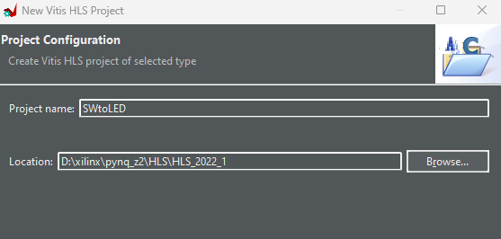
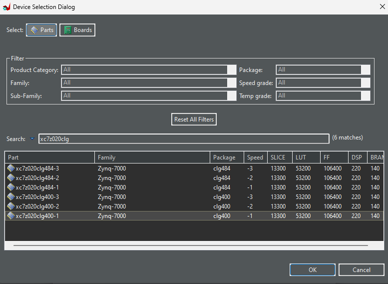
Right-click Source and select Add Source File to add your C/C++ source (the code to synthesize into HDL). In this experiment, add SWtoLED.cpp. This test performs a simple multiplication: multiplying two 2-bit switch inputs and displaying the result on LEDs.
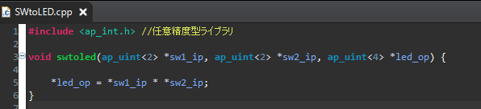
Right-click Test Bench and select Add Source File to add the C testbench for functional verification. Here we add SWtoLED_tb.cpp.
The project tree structure should now look like this:
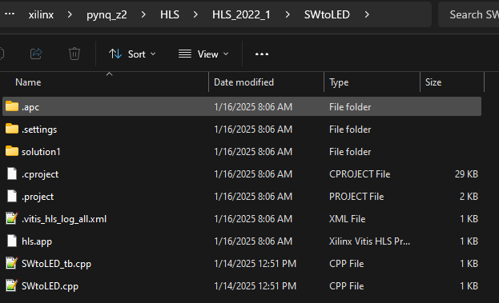
Next, click Project → Project Settings → Synthesis and set the top-level function to synthesize into HDL. In this example, choose swtoled.
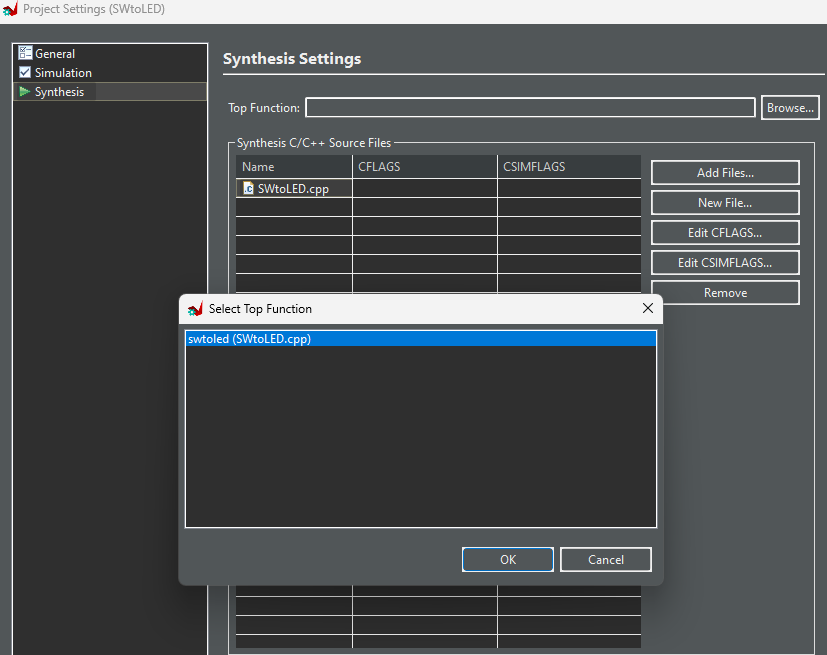
The Flow Navigator panel displays 4 main stages:
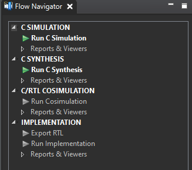
1.1 C SIMULATION
Click C SIMULATION → Run C Simulation to verify functional correctness using the C testbench (SWtoLED_tb.cpp).
1.2 C SYNTHESIS
Click C SYNTHESIS → Run C Synthesis and specify the target clock Period.
Once synthesis completes, HLS generates an FPGA resource utilization summary and a timing report.
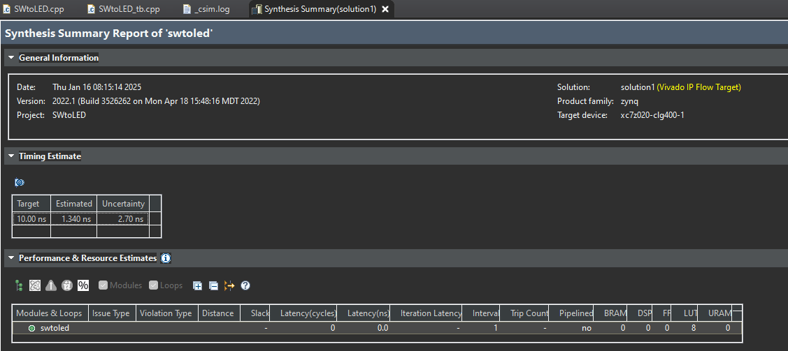
The Uncertainty value acts as a timing margin parameter.
1.3 C/RTL COSIMULATION
Click C/RTL COSIMULATION → Run Cosimulation.
Set Dump Trace: port and Wave Debug: Enable.
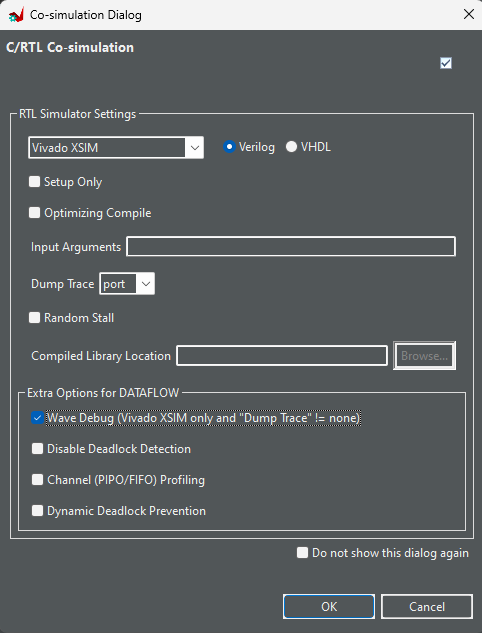
Vivado will launch automatically and display the HDL simulation waveforms.
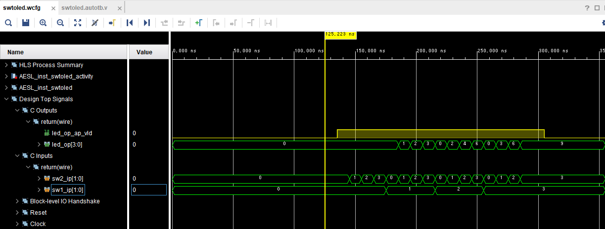
1.4 IMPLEMENTATION
Click IMPLEMENTATION → Export RTL and set the Export Format to "Vivado IP".
When exported, HLS generates an export.zip file, which can be imported directly into Vivado as an IP repository.
export.zip, pointing Vivado directly to the extracted ip folder also works.
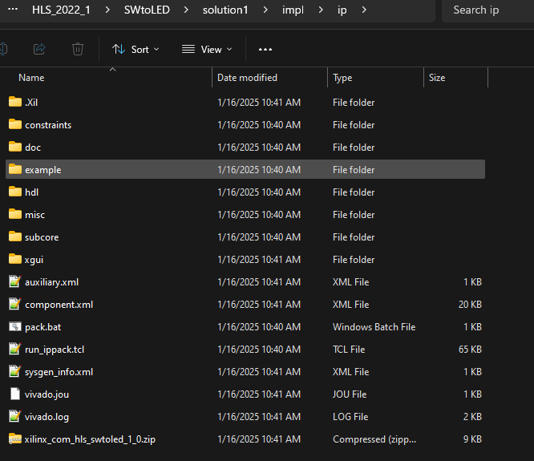
2. Testing the HLS-Generated IP
Extract the exported archive (export.zip) to a directory of your choice.
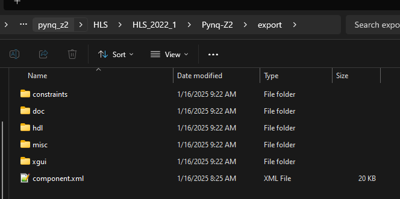
In Vivado's IP Catalog, click Add Repository and add the HLS IP folder.
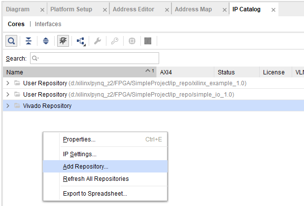
The added IP will appear in the IP Catalog list.
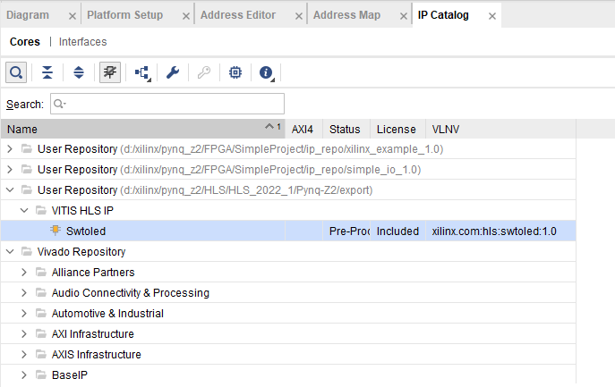
Add the IP into a Vivado Block Design, wire it up to external SW switches and LED outputs, run synthesis/implementation, and generate the bitstream.
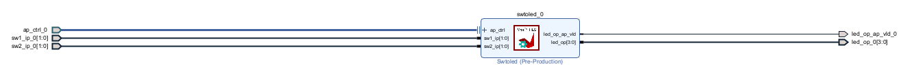
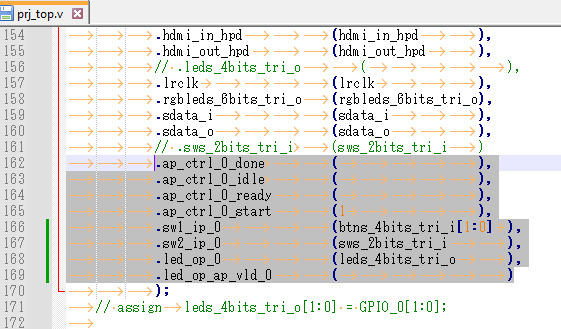
Testing on physical hardware:
| 1 * 1 = 1 | 1 * 2 = 2 |
|---|---|
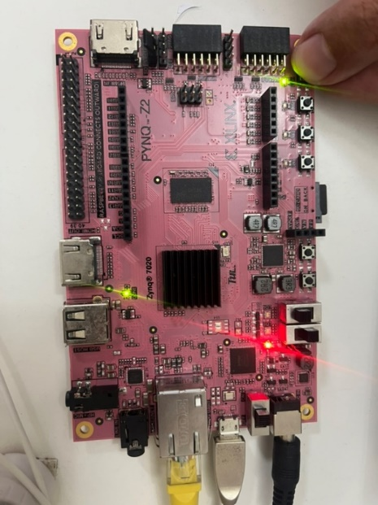 |
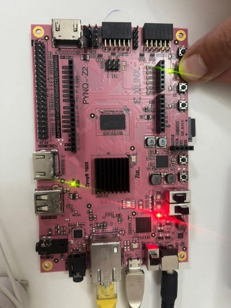 |
| 2 * 2 = 4 | 3 * 2 = 6 |
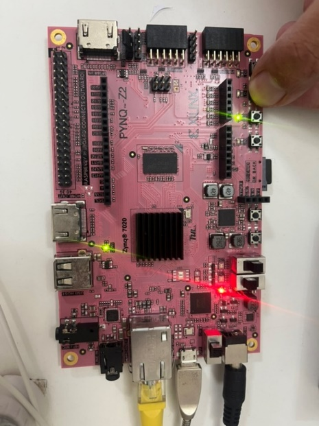 |
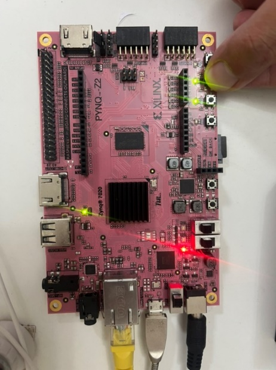 |
3. HLS Pragmas
HLS transforms C code into HDL according to directives specified via Pragmas. There are many pragma types; for comprehensive details, refer to the Vitis High-Level Synthesis User Guide (UG1399). Below is an overview of essential pragmas:
3.1 Interface
Directs function arguments to map onto standardized AXI buses instead of discrete I/O wires. Adding interface pragmas allows function arguments to communicate over AXI interfaces configured as slave, master, or stream.
| Mode | Bus Protocol | Use Case |
|---|---|---|
s_axilite |
AXI4-Lite slave | Enables a host CPU (e.g. ARM in Zynq) to read/write IP registers and control execution (ap_start / ap_done). |
m_axi |
AXI4 master | Allows the IP to perform direct DMA-like memory access (e.g. external DDR). |
axis |
AXI4-Stream | Continuous high-throughput streaming data between modules (video, audio, DSP). |
Example pragma syntax:
void top(int a, int b, int *result) {
#pragma HLS INTERFACE s_axilite port=a bundle=CTRL
#pragma HLS INTERFACE s_axilite port=b bundle=CTRL
#pragma HLS INTERFACE m_axi port=result bundle=gmem offset=slave
#pragma HLS INTERFACE s_axilite port=result bundle=CTRL
#pragma HLS INTERFACE s_axilite port=return bundle=CTRL // Control registers: ap_start / ap_done
*result = a * b;
}Interface pragmas can be structured in several ways. For example, adding interface directives to the C source from Section 2 results in an exported IP with automatically assigned register offsets as shown below.
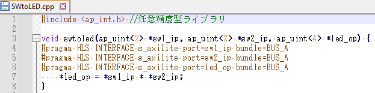
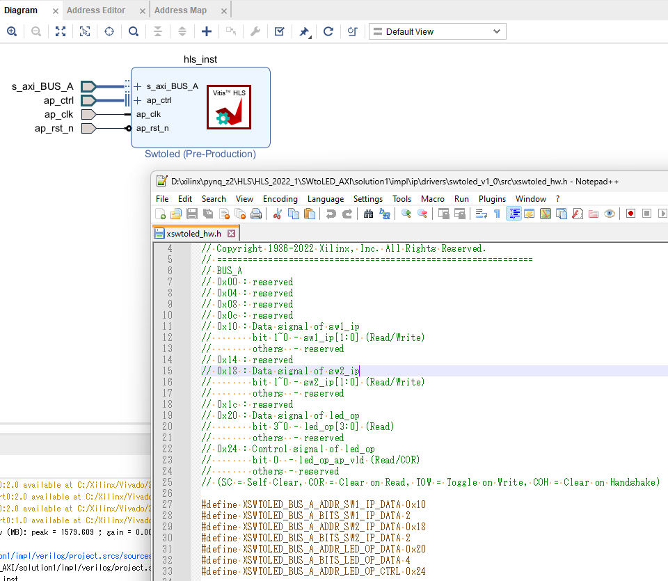
If you prefer explicit memory offsets rather than automatic assignment, you can provide an offset parameter.
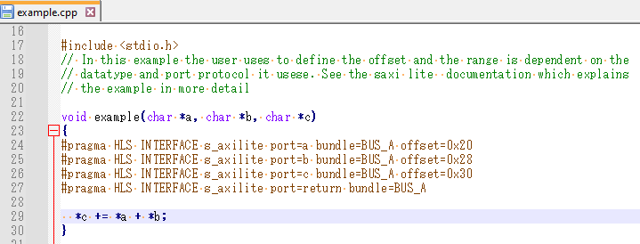
3.2 Pipeline
Specifies whether loop iterations or function execution should be pipelined during HLS synthesis.
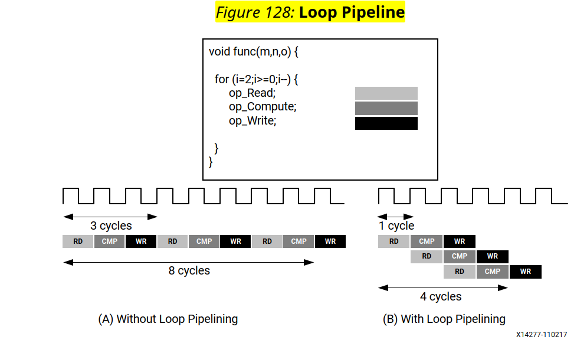
Comparative example:
| With Pipelining | Without Pipelining |
|---|---|
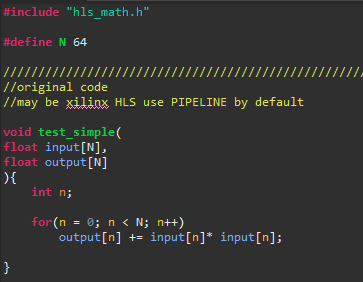 |
| Pipeline | FPGA Logic Utilization |
|---|---|
| Yes | 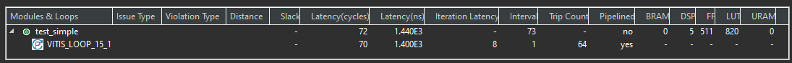 |
| No | 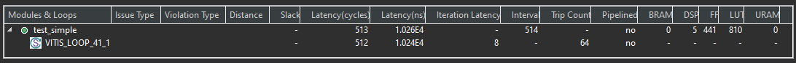 |
Without pipelining, the calculation output = input * input takes 8 clock cycles per iteration. If a for loop runs 64 iterations, the result will only be ready after 64 * 8 = 512 clock cycles. With pipelining, results are produced significantly faster with only a minor increase in FPGA logic utilization.
for (int i = 0; i < 64; i++) {
#pragma HLS PIPELINE II=1
out[i] = in[i] * in[i];
}II (Initiation Interval) is the number of clock cycles between the start of successive loop iterations. When II=1, a new iteration starts every single clock cycle. The estimated total latency is:
Total Time ≈ Latency of 1 iteration + (Iteration Count - 1) × II
In the example above (1 iteration = 8 CLK, 64 iterations), an II of 1 yields approx. 8 + 63 = 71 CLK, compared to 512 CLK without pipelining (this is a theoretical estimate; consult the C Synthesis report for exact numbers).
3.3 Unroll
Instructs HLS to generate parallel hardware compute units for loop iterations when synthesizing into HDL.
Comparative example:
| Without Unroll | With Unroll |
|---|---|
| Unroll | FPGA Logic Utilization |
|---|---|
| None | |
| Factor=2 | 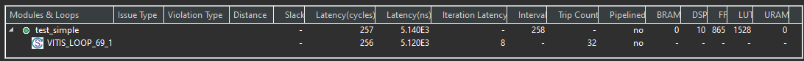 |
| Factor=4 | 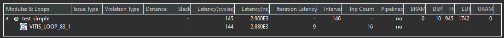 |
| Factor=8 | 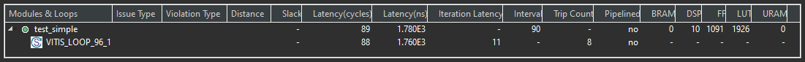 |
| Auto | 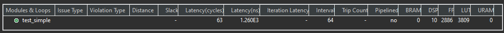 |
Unroll instantiates parallel compute circuits according to the specified factor. For instance, Factor=2 generates two multiplier units in parallel. As reflected in the results, computation completes faster than non-unrolled loops (at the expense of increased FPGA logic usage).
for (int i = 0; i < 64; i++) {
#pragma HLS UNROLL factor=4 // Omitting factor unrolls the entire loop completely
out[i] = in[i] * in[i];
}ARRAY_PARTITION to divide the array across multiple memory banks for concurrent access.
#pragma HLS ARRAY_PARTITION variable=in cyclic factor=4
#pragma HLS ARRAY_PARTITION variable=out cyclic factor=43.4 Dataflow
Controls task-level pipelining and data communication between sub-functions/modules. Without Dataflow, all outputs from one module must finish completely before the next module begins. With Dataflow, downstream processing can start as soon as partial output data is produced by the upstream module.
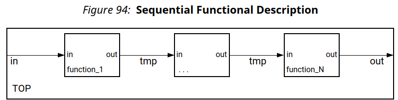
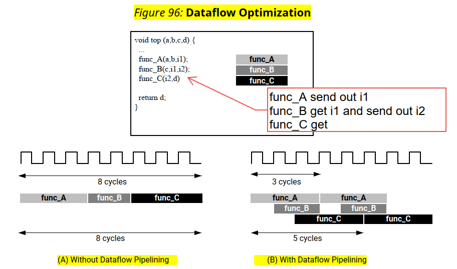
Comparative example:
| Without Dataflow | With Dataflow |
|---|---|
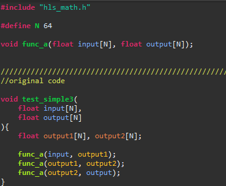 |
| Dataflow | FPGA Logic Utilization |
|---|---|
| No | 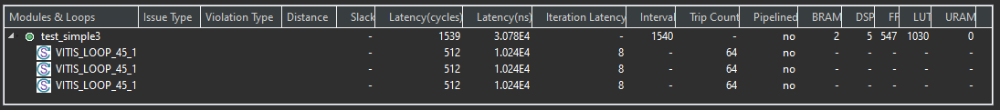 |
| Yes | 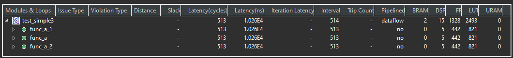 |
Applying Dataflow reduces total computation latency from 1539 CLK → 513 CLK (with an increase in FPGA resource utilization for intermediate buffers).
void top(int in[64], int out[64]) {
#pragma HLS DATAFLOW
int tmp1[64], tmp2[64];
stage1(in, tmp1);
stage2(tmp1, tmp2);
stage3(tmp2, out);
}hls::stream between functions is a standard best practice.
3.5 Pragma Summary
| Pragma | Functionality | Impact on Speed | Impact on FPGA Resources |
|---|---|---|---|
INTERFACE |
Configures port and bus interface types for the IP | - | Adds bus interface wrapper logic |
PIPELINE |
Overlaps execution of loop iterations / function calls | Substantially faster | Minor increase |
UNROLL |
Executes loop iterations in parallel hardware | Faster proportional to factor | Increases proportional to factor |
DATAFLOW |
Enables task-level pipelining between sub-functions/modules | Higher throughput | Adds inter-stage buffer memory |
4. Usage Constraints & Unsupported Constructs
The Vitis High-Level Synthesis User Guide includes an Unsupported C/C++ Constructs section, summarized below:
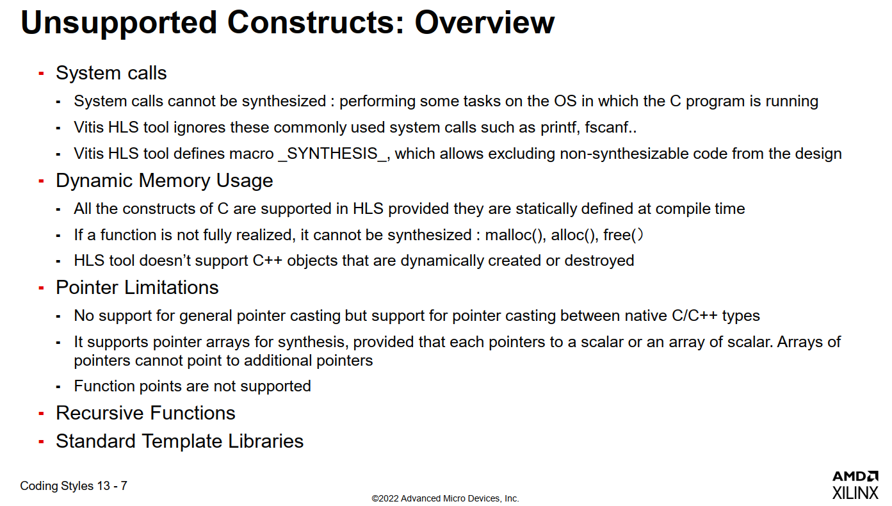
| Constraint | Details |
|---|---|
| System calls | OS-dependent functions (e.g., file I/O, printf) can only be used in C testbenches and cannot be synthesized into hardware logic. |
| Dynamic memory | malloc / free / new / delete are not synthesizable; array sizes must be fixed at compile time. |
| Recursion | Recursive function calls are not supported; refactor using iterative loops instead. |
| Pointers | Arbitrary pointer casting and nested pointer-to-pointer arguments on top-level function interfaces have strict limitations. |
| Undefined behavior | Constructs resulting in undefined C/C++ behavior may cause discrepancies between C simulation and RTL simulation results. |
* Exact restrictions depend on your Vitis toolchain version. Please check the Unsupported C/C++ Constructs section in UG1399 corresponding to your version.
5. Additional Topics & References
- Image Processing Libraries: Xilinx provides pre-built Vitis Libraries (e.g. Sobel filter, color conversions), eliminating the need to write standard algorithms from scratch in HLS. However, OpenCV is required, which entails detailed environment setup on Windows. Environment setup guide reference: https://phys-higashi.com/2501/
-
Arbitrary Precision Data Types: Beyond standard C data types, HLS supports arbitrary-width integers and fixed-point numbers. Defining exact bit-widths optimizes FPGA logic utilization when a full 32-bit width is unnecessary.
#include "ap_int.h" #include "ap_fixed.h" ap_uint<2> sw; // 2-bit unsigned integer ap_int<12> x; // 12-bit signed integer ap_fixed<16,4> y; // 16-bit fixed-point (4-bit integer part)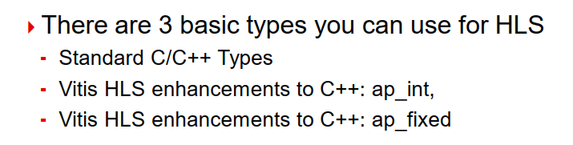
- Libraries Compatible with HLS (Vitis Libraries): https://github.com/Xilinx/Vitis_Libraries
- Introductory Examples (Vitis HLS Introductory Examples): https://github.com/Xilinx/Vitis-HLS-Introductory-Examples